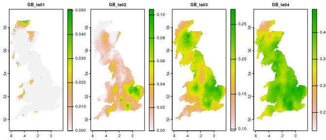
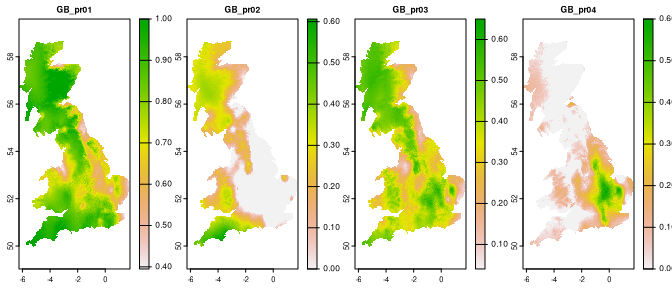

The spquery package performs several queries based on spatial raster data.
Installation
You can install the development version of spquery from GitHub with:
# install.packages("devtools")
devtools::install_github("Nowosad/spquery")Example
library(terra)
#> terra 1.5.41
library(sf)
#> Linking to GEOS 3.10.2, GDAL 3.4.3, PROJ 8.2.1; sf_use_s2() is TRUE
library(spquery)
ta = rast(system.file("raster/ta_scaled.tif", package = "spquery"))[[1:4]]
plot(ta, nr = 1)
pr = rast(system.file("raster/pr_scaled.tif", package = "spquery"))[[1:4]]
plot(pr, nr = 1)
Contribution
Contributions to this package are welcome - let us know if you need other distance measures or transformations, have any suggestions, or spotted a bug. The preferred method of contribution is through a GitHub pull request. Feel also free to contact us by creating an issue.